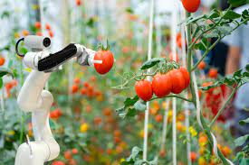

With the change in climatic condition and increasing pollution it’s difficult for farmers to determine the right time for sowing seed, with help of Artificial Intelligence farmers can analyze weather conditions by using weather forecasting which helps they plan the type of crop can be grown and when should seeds be sown.
The type of soil and nutrition of soil plays an important factor in the type of crop is grown and the quality of the crop. Due to increasing, deforestation soil quality is degrading and it’s hard to determine the quality of the soil.
AI companies are developing robots that can easily perform multiple tasks in farming fields. This type of robot is trained to control weeds and harvest crops at a faster pace with higher volumes compared to humans.
These types of robots are trained to check the quality of crops and detect weed with picking and packing of crops at the same time. These robots are also capable to fight with challenges faced by agricultural force labor.
What is known as precision agriculture. Precision agriculture uses AI technology to aid in detecting diseases in plants, pests, and poor plant nutrition on farms. AI sensors can detect and target weeds and then decide which herbicides to apply within the right buffer zone. This helps to prevent over application of herbicides and excessive toxins that find their way in our food.
"AI in agriculture not only helping farmers to automate their farming but also shifting to precise cultivation for higher crop yield and better quality while using less resources."